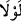

kimsenin günahının daha büyük olacağına dikkat çekilmektedir.”
et-Te’vîlâtü’n-Necmiyye’de şöyle der: “Onun için büyük azâb vardır.” İşlediği günah
sebebiyle hesâba çekilip cezâlandırılır. Bu ise hem dünya hem âhirette hüsrâna
uğramaktır.” Sonra da mezkûr hadis zikredilmiştir.
Mesnevî’de der ki:
A delikanlı, kim kötü bir âdet koyar,
İnsanlar da körlüklerinden o yola düşerse
O günahların hepsi onun üzerine toplanır;
Çünkü o baştır, ötekilerse kuyruk
12. Bu iftirâyı işittiğinizde erkek ve kadın mü’minlerin, kendileri hakkında
hüsnüzanda bulunup da: “Bu, apaçık bir iftirâdır” demeleri gerekmez miydi?
Ey bâtıl söze dalanlar, “Bu iftirâyı işittiğinizde…” “
” edâtı, mâzî fiilin başına
geldiğinde bir fiilin terk edilmesi sebebiyle azarlamak ve kınamak mânâsınadır. Çünkü
mâzî fiilde taleb, yâni emir ya da nehiy mânâsı düşünülemez. Muzârî fiilin başına
geldiğinde ise bir fiilin yapılmasını teşvik ve taleb (emir) mânâsına gelir.
“Erkek ve kadın mü’minlerin, kendileri hakkında hüsnüzanda bulunup da: …”
Çünkü mü’min hakkında iyilik düşünmek, onu ayıplayanları bundan men’etmek îmânın
gereğidir. Bu zannı ve men’etmeyi terk eden kimse îmânın gereğini yerine getirmeyi terk
etmiş olur.
Âyetin bu kısmında ayıplamayı te’kid için üçüncü şahıs kipine geçilmektedir.
“
kendileri”nden maksad, kendileri yerine koyacakları hemcinsleridir. Nitekim
başka bir âyette: “
Kendi kendinizi ayıplamayın” (el-Hucurât, 49/11)
buyrulmuştur. Kastedilen ise: “Bazınız bazınızı ayıplamasın” demektir. Çünkü bütün
mü’minler bir tek kişi gibidirler. O halde erkek ve kadın mü’minlerin, kendileri gibi
mü’minlerden birisi hakkında bizzat iftirâda bulunan kimseden veya dolaylı olarak
böyle bir söz işittiklerinde hüsn-i zanda bulunmaları vâcibdir.
O anda “Bu,” söz “apaçık” âşikâr ve iftirâ olduğu besbelli “bir iftirâdır”
mü’minlerin annesi, Rasûlullah (s.a.)’in haremi Sıddîk’ın kızı Sıddîka’dan nasıl böyle
bir şey beklenebilir! “demeleri gerekmez miydi?” Yâni Hak Sübhânehû saygınlık ve
değerlerinden ötürü Peygamber’in eşlerini bu gibi durumlarda korur.